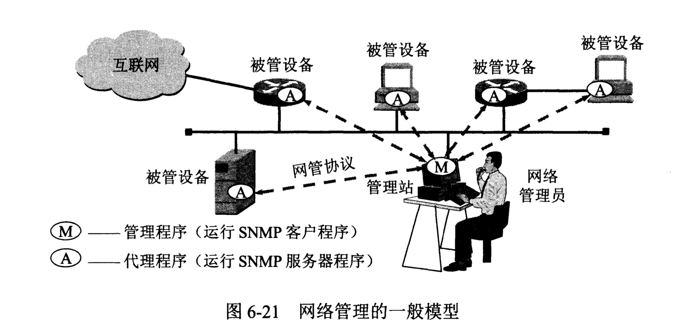
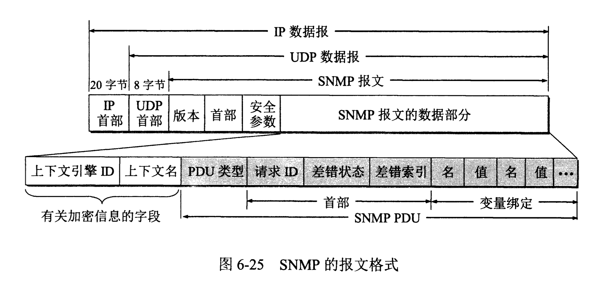

计算机网络/应用层/简单网络管理协议SNMP # 网络管理的基本概念 网络管理包括对硬件、软件和人力的使用、综合与协调，以便对网络资源进行监视、测试、配置、分析、评价和控制，这样就能以合理的价格满足网络的一些需求，如实时运行性能、服务质量等。

网络管理模型中的主要构件 1. 管理站。 管理站又称为管理器，是整个网络管理系统的核心，它通常是个有着良好图形界面高性能的工作站，并由网络管理员直接操作和控制。管理站的所在部门也常称为网络运行中心NOC(Network Operations Center)。管理站中的关键构件是管理程序。管理程序在运行时就成为管理进程。管理站（硬件）或管理程序（软件）都可称为管理者(Manager)或管理器。 2. 被管设备。 在被管网络中有很多的被管设备（包括设备中的软件）。被管设备可以是主机、路由器、打印机、集线器、网桥或调制解调器等。在每一个被管设备中可能有许多被管对象(Managed Object)。被管设备有时可称为网络元素或简称为网元。 3. 网络管理协议。 简单网络管理协议SNMP(Simple Network Management Protocol)中的管理程序和代理程序按客户服务器方式工作。管理程序运行SNMP客户程序，而代理程序运行SNMP服务器程序。
网络管理的基本原则 1. 若要管理某个对象，就必然会给该对象添加一些软件或硬件，但这种“添加”对原有对象的影响必须尽量小些。 2. SNMP最重要的指导思想就是要尽可能简单。SNMP的基本功能包括监视网络性能、检测分析网络差错和配置网络设备等。
SNMP的网络管理由三个部分组成 1. SNMP本身。SNMP定义了管理站和代理之间所交换的分组格式。 2. 管理信息结构SMI(Structure of Management Information)。SMI定义了命名对象和定义对象类型（包括范围和长度）的通用规则，以及把对象和对象的值进行编码的规则。 3. 管理信息库MIB(Management Information Base)。MIB在被管理的实体中创建了命名对象，并规定了其类型。
总之，SMI建立规则，MIB对变量进行说明，而SNMP完成网管的动作。
管理信息结构SMI
SMI的功能应当有三个：被管对象应怎样命令；用来存储被管对象的数据类型有哪些；在网络上传送的管理数据应如何编码。 1. 被管对象的命名 SMI规定，所有被管对象都必须处在对象命名树(object naming tree)上。 2. 被管对象的数据类型 SMI使用基本的抽象语法记法1（即ISO制定的ASN.1）来定义数据类型，但又增加了一些新的定义。SMI把数据类型分为两大类：简单类型和结构化类型。 3. 编码方法 SMI使用ASN.1制定的基本编码规则BER(Basic Encoding Rule)进行数据的编码。BER指明了每种数据的类型和值。ASN.1把所有的数据元素都表示为T-L-V三个字段组成的序列。T字段(Tag)定义的数据的类型，L字段(Length)定义V字段的长度，而V字段(Value)定义数据的值。
管理信息库MIB
所谓“管理信息”就是指在互联网的网管框架中被管对象的集合。被管对象必须维持可供管理程序读写的若干控制和状态信息。这些被管对象构成了一个虚构的信息存储器，所以才称为管理信息库MIB。管理程序就使用MIB中这些信息的值对网络进行管理（如读取或重新设置管理这些值）。只有在MIB中的对象才是SNMP所能够管理的。
SNMP的协议数据单位和报文
实际上，SNMP的操作只有两种基本的管理功能，即： 1. “读”操作，用Get报文来检测各被管对象的状况； 2. “写”操作，用Set报文来改变各被管对象的状况。
SNMP的这些功能通过探询操作来实现，即SNMP管理进程定时向被管理设备周期性地发送探询信息。探寻的好处是：第一，可使系统相对简单；第二，能限制通过网络所产生的管理信息的通信量。 当SNMP不是完全的探询协议，它允许不经过询问就能发送某些信息。这种信息称为陷阱(trap)，表示他能够捕捉“事件”。但这种陷阱信息的参数是受限制的。 当被管对象的代理检测到有事件发生时，就检查其门限值。代理只向管理进程报告达到某些门限值的事件（这就叫做过滤）。这种方法的好处是：第一，仅在严重事件发生时才发送陷阱；第二，陷阱信息很简单且所需要的字节数很少。 总之，使用探询（至少是周期性地）以维持对网络资源的实时监视，同时也采用陷阱机制报告特殊事件，使用SNMP成为一种有效的网络管理协议。 SNMP使用无连接的UDP，因此在网络上传送SNMP报文的开销较小。

参考文献：《计算机网络（第7版）》谢希仁著。